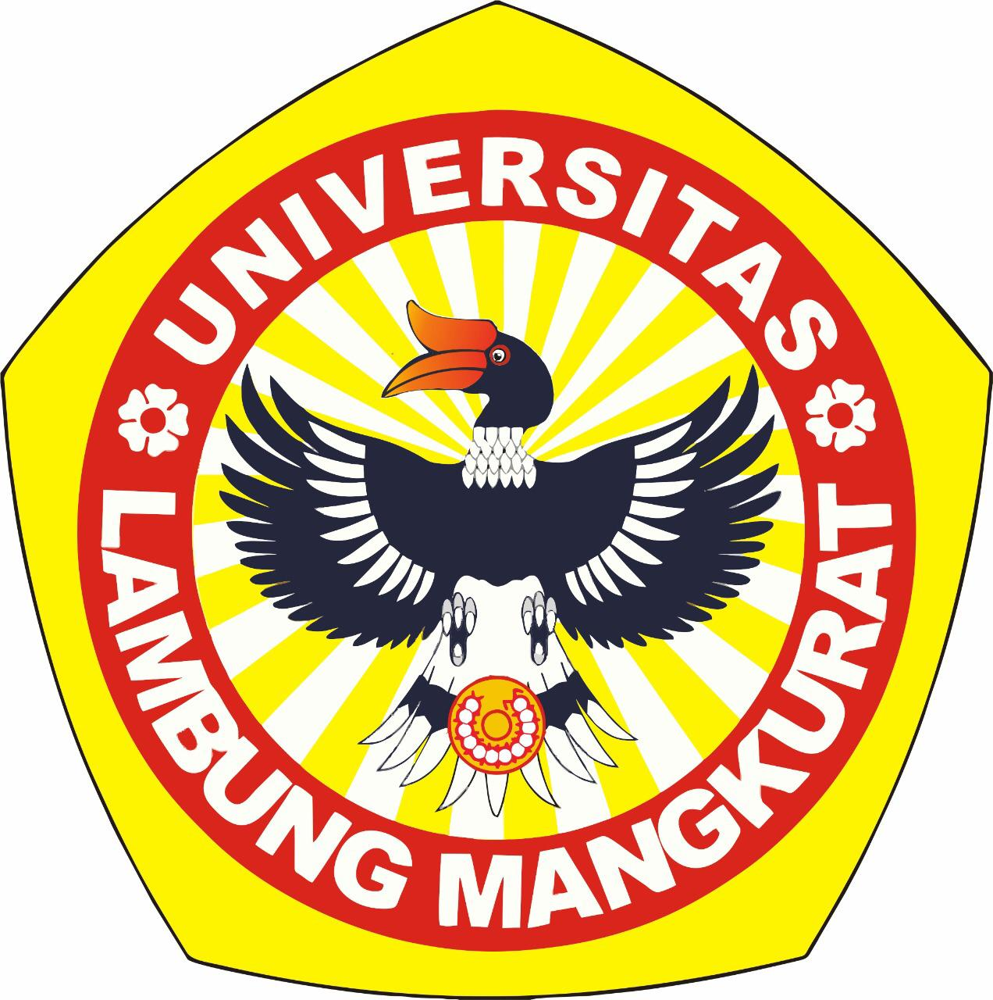

Hasil Verifikasi Pengurangan Tarif Uang Kuliah
Untuk Jenjang Magister dan Doktor
Universitas Lambung Mangkurat Tahun 2025
Pengecekan Hasil Verifikasi
Mahasiswa Baru
Mahasiswa Lama
No Registrasi (11 digit angka)
CAPTCHA:
Cek
NIM (13 digit angka)
CAPTCHA:
Cek
Hasil Verifikasi
No Registrasi / NIM
Nama
Program Studi
Kategori
Hasil Verifikasi
Alasan
Kembali